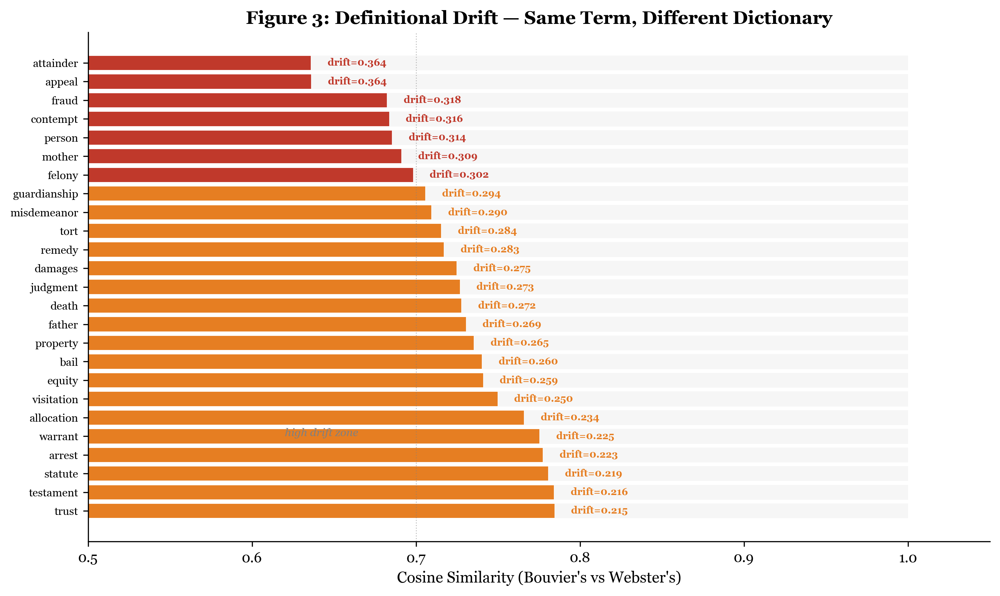
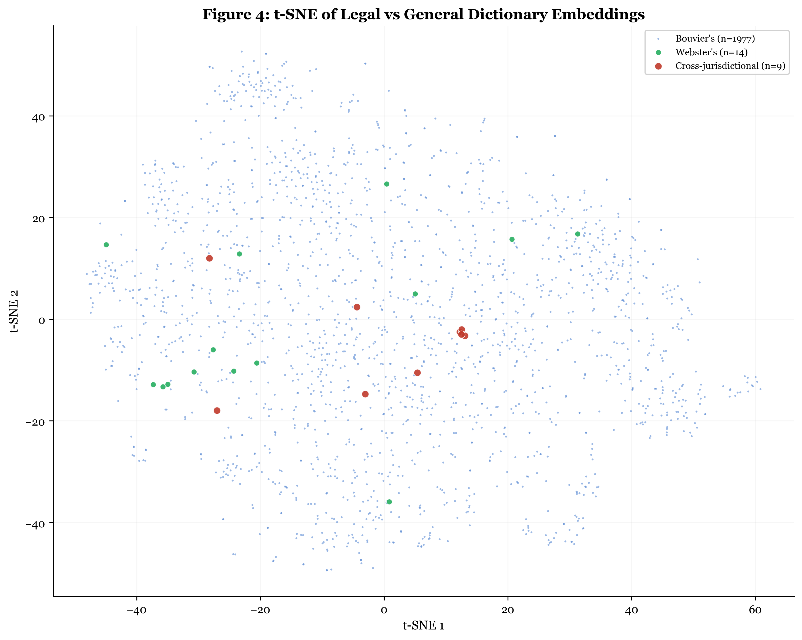
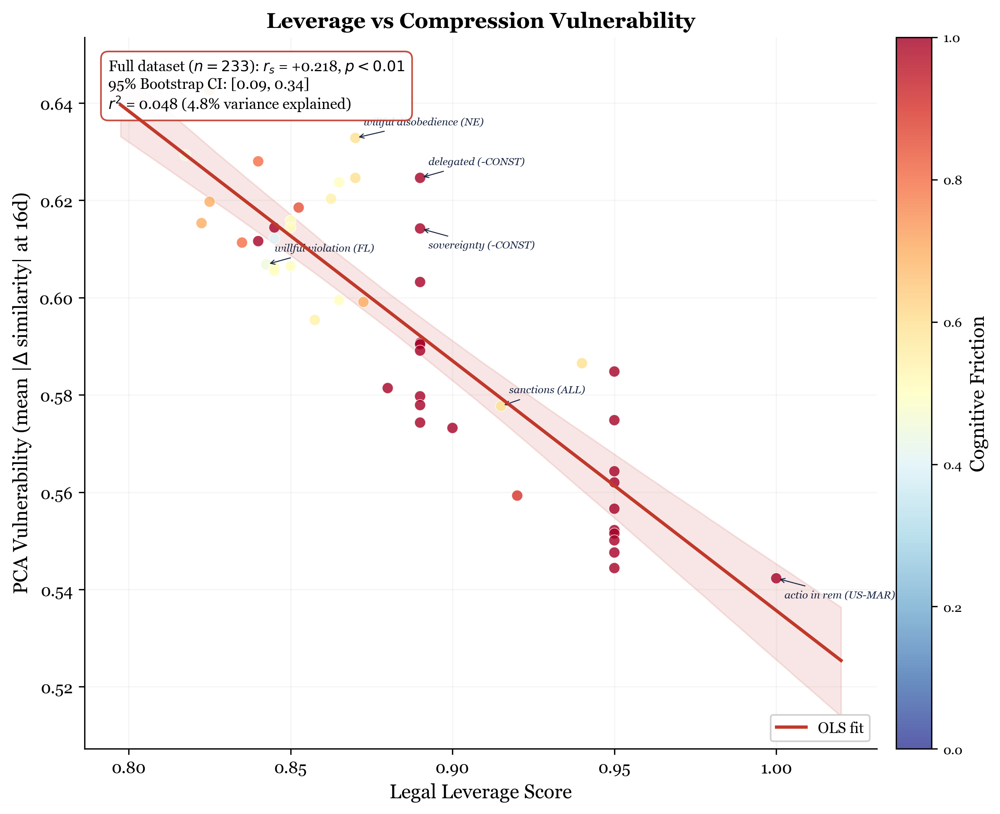

Abstract
Legal terms carry different meanings depending on which dictionary defines them and which jurisdiction applies them. We embed 6,200 terms from Bouvier's Law Dictionary (1856), 46 from Webster's 1913 (general-language control), 19 cross-jurisdictional terms absent from English dictionaries, and 233 jurisdiction-scored leverage words spanning 27 jurisdictions. We report three findings. First, definitional drift: the same term defined by a legal dictionary and a general dictionary maps to measurably different embedding locations (mean drift 23.0% across 44 terms, up to 36.4% for “attainder”), and the same term across jurisdictions drifts up to 33.7% (“material change,” Nebraska vs. Alaska). Second, leverage–vulnerability correlation: legal leverage score correlates positively with PCA compression damage (rs = +0.22, p < 0.01, 95% CI [0.09, 0.34]), so the terms that determine custody, imprisonment, and constitutional rights are disproportionately destroyed by dimensionality reduction. Third, a model-level variance floor: PCA at 16 dimensions captures only 33% of variance for legal terms and 30.5% for Wikipedia articles under nomic-embed-text, a gap of 2.8 percentage points that is too small to attribute to domain effects; the 50-point gap with E5-Mistral benchmarks is architectural. Together, these results show that dictionary provenance and jurisdictional context — not just dimensionality — determine what a retrieval system can and cannot distinguish.
Key Findings
- Definitional drift: The same term defined by Bouvier's (legal) and Webster's (general) maps to locations up to 36.4% apart in embedding space (“attainder”), with a mean drift of 23.0% across 44 shared terms.
- Cross-jurisdictional drift: The same legal term embedded with state-specific definitions differs by up to 33.7% between jurisdictions (Nebraska vs. Alaska for “material change”), rising to 41.9% in an expanded 141-jurisdiction dataset.
- Leverage–vulnerability correlation: Legal importance correlates with PCA damage (rs = +0.22, p < 0.01). Terms determining custody, imprisonment, and constitutional rights are disproportionately destroyed by compression.
- Model-level variance floor: PCA at 16 dimensions captures only 33% of variance for legal terms under nomic-embed-text. The 50pp gap with E5-Mistral benchmarks is architectural, not domain-specific.
- DictEmbed dataset: 6,498 embedded term-definition pairs from Bouvier's (6,200), Webster's (46), cross-jurisdictional terms (19), and leverage words (233) across 27 jurisdictions.
Top 5 Definitional Drift Terms
| Term | Similarity | Drift |
|---|---|---|
| attainder | 0.636 | 36.4% |
| consideration | 0.684 | 31.6% |
| covenant | 0.698 | 30.2% |
| chattel | 0.710 | 29.0% |
| escrow | 0.717 | 28.3% |
Figures

Figure 3: Drift heatmap. Cosine similarity between Bouvier's (legal) and Webster's (general) definitions for shared terms. Darker cells indicate greater definitional drift.

Figure 4: t-SNE visualization. Bouvier's legal terms (blue) and Webster's general terms (orange) in 2D projection. Overlapping terms highlight where legal and general meanings diverge.

Figure 9: Leverage–vulnerability correlation. Legal leverage score vs. PCA compression damage for 233 terms. Higher-stakes terms (custody, contempt) suffer more compression damage (rs = +0.22).
Citation
BibTeX
@article{thorarinson2026geometry,
title={The Geometry of Legal Language: Embedding Structure Across Authoritative Dictionaries},
author={Thorarinson, Joel},
year={2026},
month={May},
pages={1--16},
note={arXiv preprint (forthcoming)},
keywords={legal NLP, dictionary embeddings, Bouvier's Law Dictionary, semantic drift, cross-jurisdictional}
}
APA
Thorarinson, J. (2026). The Geometry of Legal Language: Embedding Structure Across Authoritative Dictionaries. arXiv preprint (forthcoming).
Authors
Keywords
legal NLP
dictionary embeddings
Bouvier's Law Dictionary
definitional drift
cross-jurisdictional
PCA compression
leverage words
semantic drift
embedding geometry
Related Papers